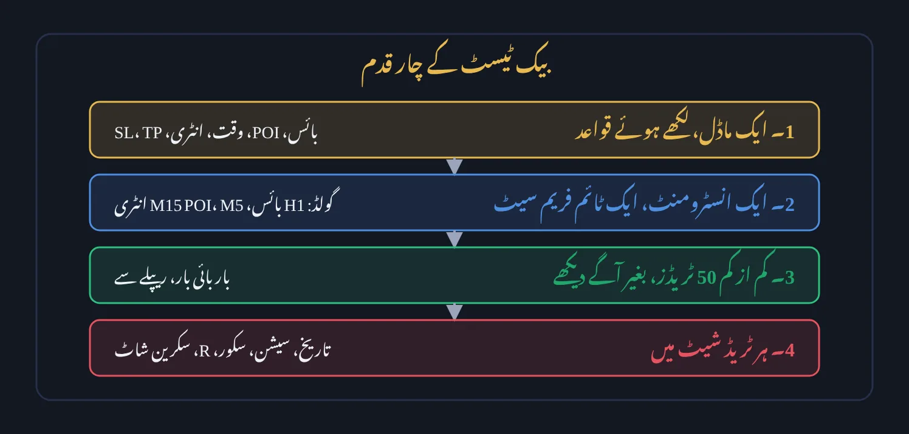
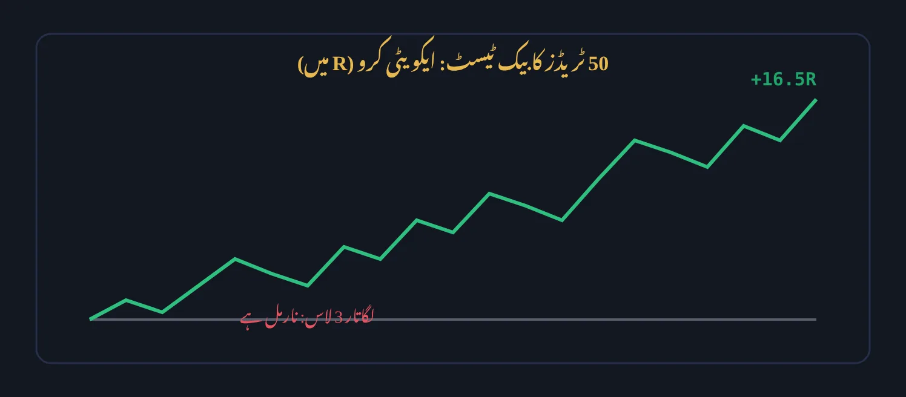
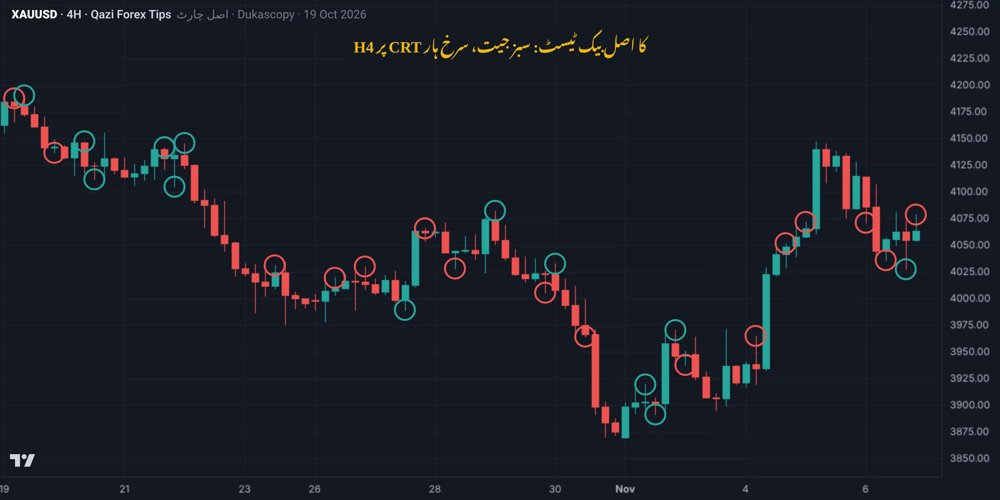

بیک ٹیسٹ کیوں؟
بیک ٹیسٹ کے بغیر لائیو ٹریڈنگ ایسے ہے جیسے نقشے کے بغیر سفر۔ بیک ٹیسٹ آپ کو تین چیزیں دیتا ہے:
- ثبوت: آپ کا قاعدہ واقعی فائدہ دیتا ہے یا نہیں۔
- نمبر: ون ریٹ، اوسط RR، لگاتار لاس، تاکہ لائیو میں برا ہفتہ آئے تو آپ گھبرائیں نہیں۔
- مہارت: 100 ٹریڈز بیک ٹیسٹ کرنے کے بعد آپ کی آنکھ سیٹ اپ کو جلدی پہچاننے لگتی ہے۔
بیک ٹیسٹ کے چار قدم

1۔ قواعد پہلے لکھیں
بیک ٹیسٹ شروع کرنے سے پہلے اپنا ایک صفحے کا قاعدہ (سبق 5.5) لکھیں۔ بیک ٹیسٹ کے دوران قاعدہ نہیں بدلنا۔ اگر بدلنا ہے تو نیا بیک ٹیسٹ۔
2۔ ایک انسٹرومنٹ، ایک ٹائم فریم سیٹ
صرف گولڈ، اور ایک سیٹ (مثلاً H4، H1، M15، M5)۔ مختلف انسٹرومنٹس کے نتائج ملانے سے کچھ سمجھ نہیں آتا۔
3۔ بغیر آگے دیکھے، بار بائی بار
- TradingView: "Bar Replay" بٹن سے کسی پرانی تاریخ پر جائیں اور کینڈل بہ کینڈل آگے بڑھیں۔
- MT5: سٹریٹیجی ٹیسٹر کے ویژول موڈ میں یا کسی مینوئل بیک ٹیسٹنگ سافٹ ویئر میں۔
- سب سے اہم: دائیں طرف کا چارٹ چھپا ہو۔ اگر آپ پہلے سے دیکھ لیں کہ قیمت کہاں گئی تو دماغ خود بخود "صحیح" سیٹ اپ چن لیتا ہے۔ اسے ہائنڈ سائٹ بائس کہتے ہیں۔
4۔ ہر ٹریڈ لکھیں
ایک شیٹ بنائیں: تاریخ، دن، سیشن، ماڈل، POI سکور، انٹری، SL، TP، نتیجہ (R میں)، سکرین شاٹ کا لنک، نوٹ۔
کتنی ٹریڈز کافی ہیں؟
| ٹریڈز | کیا کہہ سکتے ہیں |
|---|---|
| 20 سے کم | کچھ نہیں؛ اتفاق ہو سکتا ہے |
| 50 | ابتدائی اندازہ |
| 100 | قابل بھروسہ تصویر |
| 200+ | مختلف مارکیٹ حالات (ٹرینڈ، رینج، خبر) سب شامل |
کم از کم 50 ٹریڈز اور کم از کم 3 مہینے کا ڈیٹا، تاکہ ٹرینڈ اور رینج دونوں طرح کی مارکیٹ شامل ہو۔
کون سے نمبر دیکھیں؟
| نمبر | مطلب | اچھا کیا ہے |
|---|---|---|
| ون ریٹ | کتنی فیصد ٹریڈز جیتیں | RR کے ساتھ دیکھیں |
| اوسط RR | اوسط جیت R میں | 2 یا زیادہ |
| فی ٹریڈ اوسط نتیجہ | ون ریٹ × اوسط جیت − لاس ریٹ | +0.3R یا زیادہ |
| لگاتار زیادہ سے زیادہ لاس | سب سے لمبی لاس کی لڑی | ذہنی تیاری کے لیے |
| میکس ڈرا ڈاؤن | سب سے بڑی گراوٹ (R میں) | اپنی رسک کی حد سے ملائیں |
| سیشن اور دن | کہاں بہتر، کہاں برا | کمزور سیشن ہٹا دیں |

بیک ٹیسٹ کے دھوکے
نتیجے کے بعد کیا کریں؟
- فی ٹریڈ اوسط نتیجہ مثبت (+0.3R یا زیادہ): ڈیمو فارورڈ ٹیسٹ پر جائیں (سبق 7.3)۔
- صفر کے قریب: دیکھیں کون سا سیشن، دن یا POI کی قسم سب سے زیادہ نقصان دے رہی ہے۔ صرف ایک تبدیلی کریں اور نئے 50 ٹریڈز پر ٹیسٹ کریں۔
- منفی: قاعدہ ابھی تیار نہیں۔ بنیادی چیز دیکھیں: بائس یا POI کی کوالٹی۔
گولڈ کی مثال: 50 ٹریڈز کا خلاصہ
ماڈل B، H1 POI اور M5 CHoCH، صرف لندن اور نیویارک کل زون، 3 مہینے:
- ٹریڈز: 50 | جیتیں: 21 (42%) | ہاریں: 29
- اوسط جیت: +2.6R | لاس: −1R
- فی ٹریڈ اوسط: 0.42 × 2.6 − 0.58 × 1 = +0.51R
- کل: تقریباً +25.6R؛ 1% رسک پر تقریباً +25% تین مہینے میں (بغیر کمپاؤنڈنگ)
- لگاتار زیادہ سے زیادہ لاس: 6 | میکس ڈرا ڈاؤن: −7R
- سیشن: لندن +18R، نیویارک +7.6R
سبق: 1% رسک پر 7% تک کا ڈرا ڈاؤن ممکن ہے؛ یہ جان کر لائیو میں 6 لاس پر گھبرا کر نظام نہیں چھوڑیں گے۔
اصل گولڈ چارٹ پر مثال
یہ ایک اصل بیک ٹیسٹ ہے: گولڈ H4 پر ماڈل E (CRT) کا میکینیکل قاعدہ، 17 ستمبر 2026 سے 10 نومبر 2026 تک (ڈیٹا: Dukascopy، بِڈ قیمت؛ وقت پاکستان کا)۔ قاعدہ: کینڈل 1 کم از کم 20 ڈالر کی؛ کینڈل 2 ایک کنارا سویپ کر کے اندر کلوز کرے؛ انٹری کینڈل 2 کے کلوز پر؛ SL کینڈل 2 کے سرے کے پار؛ TP کینڈل 1 کا دوسرا کنارا؛ 6 کینڈلز میں کچھ نہ ہو تو صفر۔ کوئی بائس، وقت یا لیکویڈیٹی فلٹر نہیں۔

| نمبر | نتیجہ |
|---|---|
| کل ٹریڈز | 62 |
| جیت | 26 (42%) |
| ہار | 36 |
| اوسط جیت | +1.3R |
| کل نتیجہ | -3.2R |
| فی ٹریڈ اوسط | -0.05R |
| لگاتار زیادہ سے زیادہ ہار | 6 |
نتیجہ: بغیر فلٹر کے CRT ان دو مہینوں میں تھوڑا نقصان میں رہا۔ ہم نے RR کا فلٹر (کم از کم 1:1 اور 1:1.5) بھی آزمایا، تب بھی نتیجہ منفی رہا۔ یہی بیک ٹیسٹ کا فائدہ ہے: اصل پیسہ لگانے سے پہلے پتہ چل گیا کہ یہ قاعدہ اکیلا کافی نہیں۔ اگلا قدم: ایک فلٹر (مثلاً صرف H4 بائس کی سمت، یا صرف کل زون میں سویپ) لگا کر دوبارہ ٹیسٹ، اور زیادہ مہینوں کا ڈیٹا۔ دو مہینے اور 62 ٹریڈز ابتدائی اندازہ ہیں، حتمی فیصلہ نہیں۔
خلاصہ
- قاعدہ پہلے لکھیں، بیک ٹیسٹ میں نہ بدلیں۔
- ایک انسٹرومنٹ، ایک ٹائم فریم سیٹ، ریپلے میں بغیر آگے دیکھے۔
- کم از کم 50 ٹریڈز، 3 مہینے؛ ون ریٹ، اوسط RR، فی ٹریڈ اوسط، لگاتار لاس اور ڈرا ڈاؤن دیکھیں۔
- ہائنڈ سائٹ، اوور فٹنگ، چنی ہوئی تاریخیں اور سپریڈ بھولنے سے بچیں۔
اپنا ٹیسٹ کریں: سبق 7.1 کا کوئز
کل 9 سوال۔ ہر سوال کا ایک جواب چنیں، فوراً پتا چلے گا کہ درست ہے یا نہیں اور کیوں۔ آخر میں آپ کا سکور اور گریڈ آئے گا۔ پاس ہونے کے لیے 70% چاہیے۔
0 درست · 0 / 9
سوال 1بیک ٹیسٹ کی تین چیزیں کون سی ہیں؟
بغیر بیک ٹیسٹ لائیو ٹریڈنگ بغیر نقشے کا سفر ہے۔
سوال 2بیک ٹیسٹ کے دوران اصول بدلنا چاہیں تو؟
ہر لاس کے بعد فلٹر لگانا overfitting ہے: اصول ماضی پر فٹ، مستقبل پر نہیں۔
سوال 3hindsight bias کیا ہے اور اس سے کیسے بچیں؟
TradingView کا Bar Replay یا MT5 کا visual mode استعمال کریں۔
سوال 4کتنی ٹریڈز پر "قابلِ اعتماد تصویر" ملتی ہے؟
20 سے کم: قسمت ہو سکتی ہے؛ 50: ابتدائی اندازہ؛ 200+: مختلف حالات؛ کم از کم 50 ٹریڈ، 3 مہینے کا ڈیٹا۔
سوال 5expectancy کا فارمولا کیا ہے؟
+0.3R یا زیادہ اچھا ہے۔
سوال 6بیک ٹیسٹ میں سپریڈ اور سلپیج کیسے شامل کریں؟
پارشل پرافٹ بھی اسی طرح لکھیں جیسے لائیو میں کرتے ہیں۔
سوال 7expectancy صفر کے قریب ہو تو کیا کریں؟
مثبت (+0.3R+) ہو تو ڈیمو فارورڈ ٹیسٹ؛ منفی ہو تو بنیادی چیزیں دیکھیں۔
سوال 8ماڈل B کی 50 ٹریڈز: 42% وِن، اوسط جیت +2.6R۔ expectancy کتنی؟
0.42 × 2.6 − 0.58 = 0.51؛ سب سے لمبی لاسنگ اسٹریک 6، زیادہ سے زیادہ ڈرا ڈاؤن −7R۔
سوال 9ڈرا ڈاؤن اور لاسنگ اسٹریک جاننے کا فائدہ کیا ہے؟
1% رسک پر 7% تک ڈرا ڈاؤن ممکن ہے؛ یہ جان کر ذہنی تیاری رہتی ہے۔
اس سبق کی چیک لسٹ
جو بات سمجھ آ جائے اس پر نشان لگائیں۔ آپ کے نشان اسی براؤزر میں محفوظ رہتے ہیں۔
اسائنمنٹ
- بیک ٹیسٹ شیٹ بنائیں (تاریخ، سیشن، ماڈل، سکور، انٹری، SL، TP، R، سکرین شاٹ، نوٹ)۔
- TradingView ریپلے میں گولڈ پر 3 مہینے پہلے کی تاریخ سے شروع کریں۔
- اپنے قاعدے پر 50 ٹریڈز مکمل کریں۔
- ون ریٹ، اوسط RR، فی ٹریڈ اوسط، لگاتار لاس اور ڈرا ڈاؤن نکالیں۔
- اپنا خلاصہ (نمبر) گروپ میں پوسٹ کریں۔
اپنی اسائنمنٹ کے اسکرین شاٹس وجہ کے ساتھ ہمارے فری فیس بک گروپ میں پوسٹ کریں، وہاں آپ کے چارٹ چیک کیے جائیں گے۔
فری گروپ جوائن کریںاکثر پوچھے جانے والے سوال
بیک ٹیسٹنگ کیا ہے؟
اپنے لکھے ہوئے قاعدے کو پرانے چارٹ پر کینڈل بہ کینڈل چلا کر دیکھنا کہ وہ ماضی میں کیسا رہا۔
کتنی ٹریڈز کا بیک ٹیسٹ کافی ہے؟
کم از کم 50 ٹریڈز اور 3 مہینے؛ 100 یا زیادہ بہتر ہے۔
SMC کا بیک ٹیسٹ کس ٹول سے کریں؟
TradingView کا Bar Replay یا MT5 کا ویژول ٹیسٹر یا کوئی مینوئل بیک ٹیسٹنگ سافٹ ویئر۔
ہائنڈ سائٹ بائس کیا ہے؟
مستقبل کا چارٹ پہلے دیکھ کر سیٹ اپ چننا، جس سے بیک ٹیسٹ اصل سے بہتر نظر آتا ہے۔
Questions
How do you backtest SMC?
Write your rules first, use bar replay on one instrument and one timeframe set without looking ahead, log every trade, and test at least 50 trades over three months.
What numbers matter in a backtest?
Win rate, average reward to risk, expectancy per trade, longest losing streak and maximum drawdown.
مزید پڑھیں
Education only, not financial advice. Trading forex, Gold and CFDs carries a high risk of loss. SMC concepts describe tendencies, not guarantees. Lesson 35 of 38.